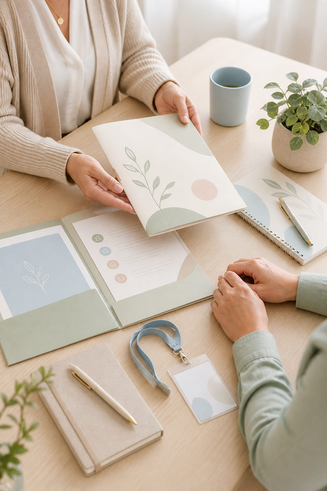

Información y acogida al voluntariado
Ofrecemos un primer espacio de información y acogida para dar a conocer la labor de AFEAES, el papel del voluntariado dentro de la asociación y la forma en que puede colaborar de manera útil, respetuosa y coordinada.